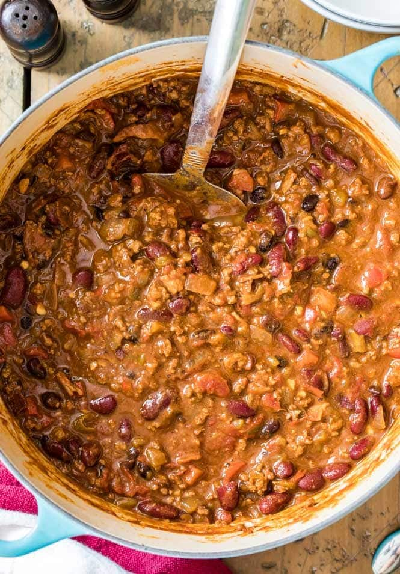

Gourmet Chili

A fantastic and easy to make chili recipe!
Congratulations, you’ve found the actual BEST Chili Recipe! It’s won
dozens of cook-offs and is about to knock your socks off. Made with
bacon (and the option to omit bacon if needed) and ground beef and
simmered on the stove for just 30 minutes, this is my go-to
cool weather comfort food.
- 5 strips uncooked bacon chopped
- 1 large yellow onion diced (about 1 cup)
- 1 red pepper diced
- 3 cloves garlic minced (about 1 Tablespoon)
- 1 lb ground beef (455g) (I use 90% but any will work)
- 1 Tablespoon brown sugar
- 1 Tablespoon chili powder
- 1 Tablespoon ancho chili powder
- 1 ½ teaspoons smoked paprika
- 1 teaspoon cumin
- 1 teaspoon onion powder
- ¾ teaspoons ground black pepper
- ½ teaspoon salt
- ⅛ teaspoon cayenne pepper
- 1 ¼ cup beef broth
- 15 oz can dark red kidney beans lightly rinsed and drained (425g)
- 15 oz can black beans lightly rinsed and drained (425)
- 14.5 oz can diced fire roasted tomatoes undrained (411g)
- 7- oz can fire roasted green chilis (198g)
- ¼ cup tomato paste (66g)
- 1 Tablespoon Worcestershire sauce
- Preferred toppings particularly sour cream, shredded cheddar cheese, and corn chips
Steps
- Place chopped (uncooked) bacon in a large pot or Dutch oven and cook over medium heat until crisp and cooked through. Remove bacon to a paper towel lined plate and drain all but 1 ½ Tablespoons of grease.
- Add onion and pepper and cook until softened, about 3-5 minutes.
- Add garlic and cook until fragrant (about 30 seconds).
- Add beef, breaking apart with a spatula as you cook. Once meat is partially (about 50%) browned, add sugar and all spices (chili powders, paprika, cumin, onion powder, black pepper, salt, cayenne pepper) and stir well.
- Add all remaining ingredients — beef broth, beans, tomatoes, tomato paste, chilis, and Worcestershire sauce — and your cooked bacon and stir well.
- Bring to a boil and cook 1-2 minutes, stirring frequently.
- Reduce heat and simmer, uncovered, stirring occasionally. Simmer for 30 minutes to allow flavor to really develop.
- Serve with preferred toppings (sour cream, shredded cheddar cheese, and corn chips are a must!)
Home